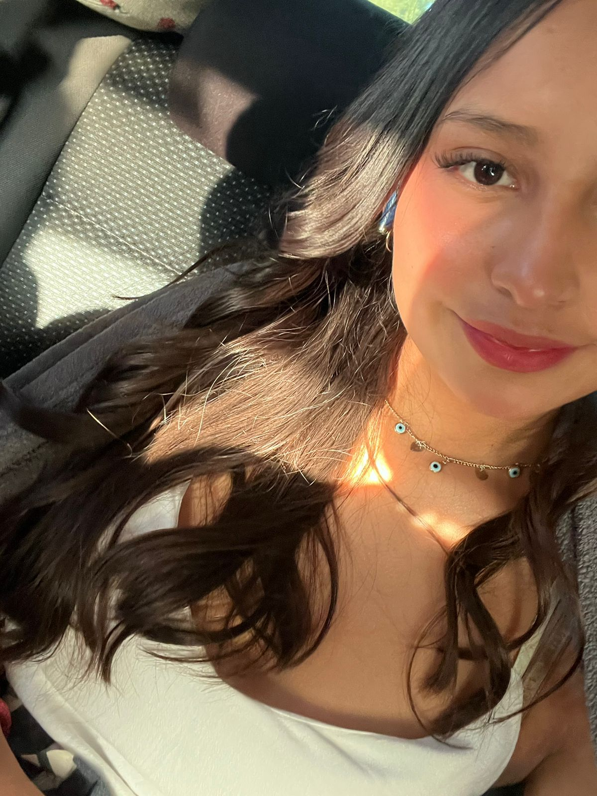
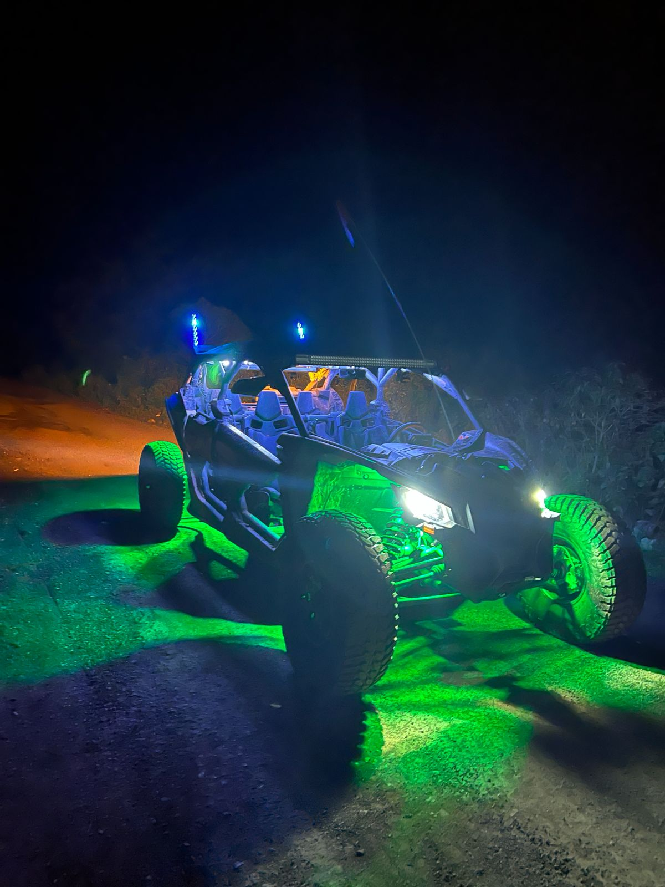

| Inicio | Energía Solar | Energía Eólica | Energía Hidráulica | Beneficios | Mis datos |
|
 |
 |
| MIS DATOS |
|---|
|
Nombre: Ariadne Garay Aguilar Matrícula: 2320032022 Grupo: 6102 Plantel: CEMSaD Durango Proyecto: Sitio Web sobre Energías Renovables |
| PRESENTACIÓN PERSONAL |
|---|
| Hola, mi nombre es Ariadne Garay Aguilar y soy estudiante del Colegio de Bachilleres del Estado de Hidalgo. Elaboré este sitio web con el propósito de compartir información sobre las energías renovables y promover el cuidado del medio ambiente mediante el uso de energías limpias. |
| ¿POR QUÉ ELEGÍ ESTE TEMA? |
|---|
| Elegí el tema de las energías renovables porque considero que es muy importante cuidar nuestro planeta y buscar alternativas que ayuden a reducir la contaminación. Además, amo la naturaleza y me interesa aprender sobre formas de contribuir a un futuro más limpio, responsable y sostenible para las próximas generaciones. |
| DATOS INTERESANTES SOBRE MÍ |
|---|
|